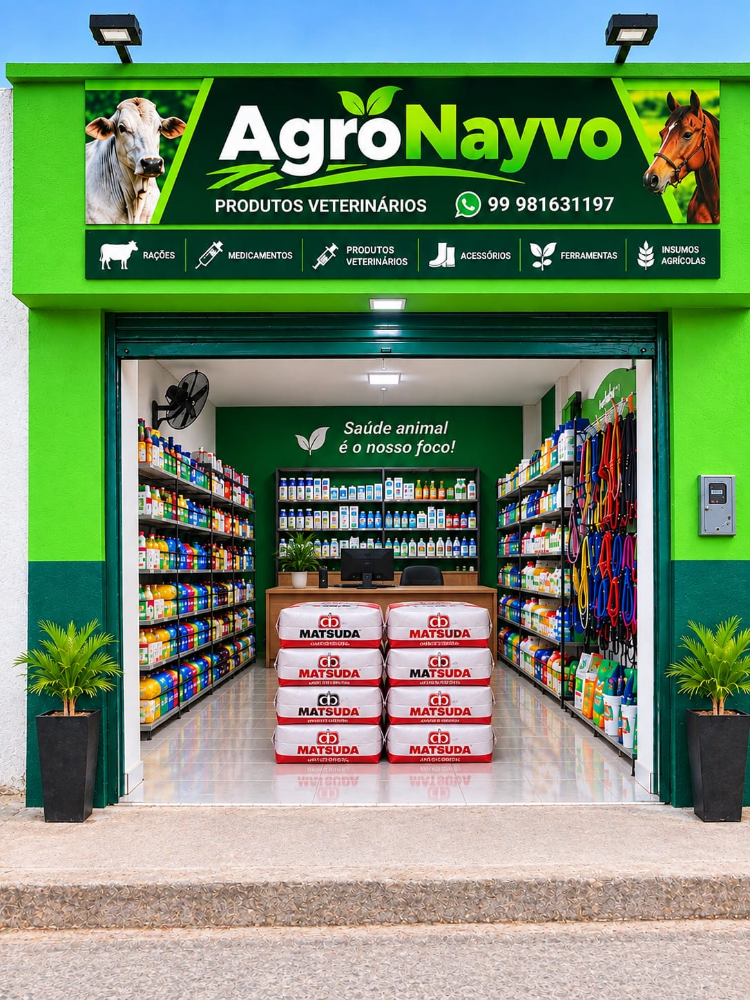

Rações
Opções para diferentes animais e necessidades.
Conte com a AgroNayvo para encontrar produtos e soluções para o cuidado dos seus animais.
Consultar pelo WhatsApp ↗
Atendimento próximoConte com nossa equipe
Cuidado animalProdutos para sua rotina
AgroNayvoAo lado de quem produz
Uma seleção de categorias para facilitar sua busca. Consulte a disponibilidade diretamente com a loja.
Opções para diferentes animais e necessidades.
Consulte nossa equipe sobre produtos e orientações adequadas.
Itens para a rotina de cuidado e manejo animal.
Acessórios e itens úteis para o dia a dia.
Equipamentos e ferramentas para sua atividade.
Consulte as opções disponíveis na loja.
A AgroNayvo reúne categorias de produtos agropecuários e veterinários em um só lugar. Nosso objetivo é oferecer um atendimento atencioso para ajudar você a encontrar o que precisa.
Converse com a nossa equipe →Entre em contato para verificar disponibilidade, informações e atendimento.